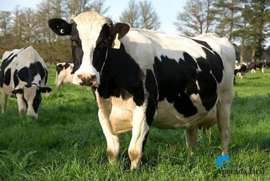

A vaca leiteira é um dos animais mais importantes para cooperativas agrícolas.Ela é criada principalmente para a produção de leite,que pode ser usado in natura ou transformado em queijo, manteiga e iogurte
Uma vaca leiteira adulta pode produzir vários litros de leite por dia. Ela precisa de boa alimentação,água limpa e cuidados vaterinários regulares para manter a saúde e a produção.
clique aqui para retornar a página inicialFicha produzida para a aula de programação web.